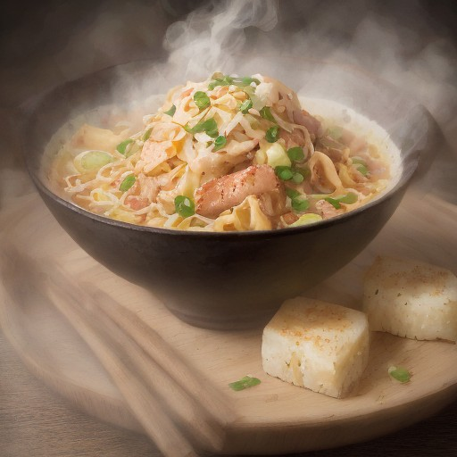

パスタ
炙りチャーシュー & 濃厚焦がしにんにく醤油の甘辛スパゲッティ：悪魔の甘辛風！

炙りチャーシューと濃厚焦がしにんにく醤油を贅沢に使った、スパイシーな甘辛スパゲッティ！一口食べたら、悪魔の誘惑に襲われる！
💡 こんな時・こんな人におすすめ！
パーティーや特別な日のディナーに、インパクトのある一品をどうぞ！
📋 必要な材料（ポストイット風）
材料リスト 1
- 炙りチャーシュー適量
- 濃厚焦がしにんにく醤油適量
- スパゲッティ適量
材料リスト 2
- 玉ねぎ1/2個
- にんにく2かけ
- しょうゆ大さじ2
🍳 作り方ステップ
1
1. スパゲッティを茹でる。
2
2. 炙りチャーシューと濃厚焦がしにんにく醤油を、お好みで混ぜる。
3
3. フライパンに玉ねぎとにんにくを炒め、しょうゆを加えて、全体に味が染み渡るように炒める。
4
4. スパゲッティを加えて混ぜ、お好みでゴマやパクチーを加える。